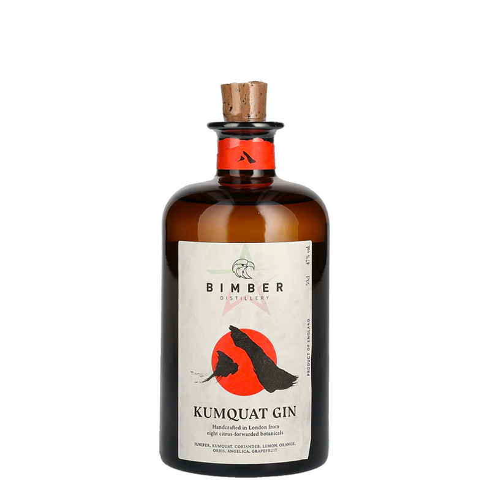
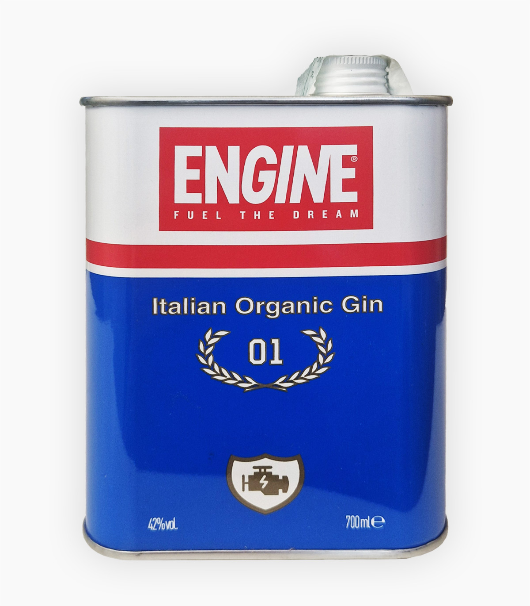
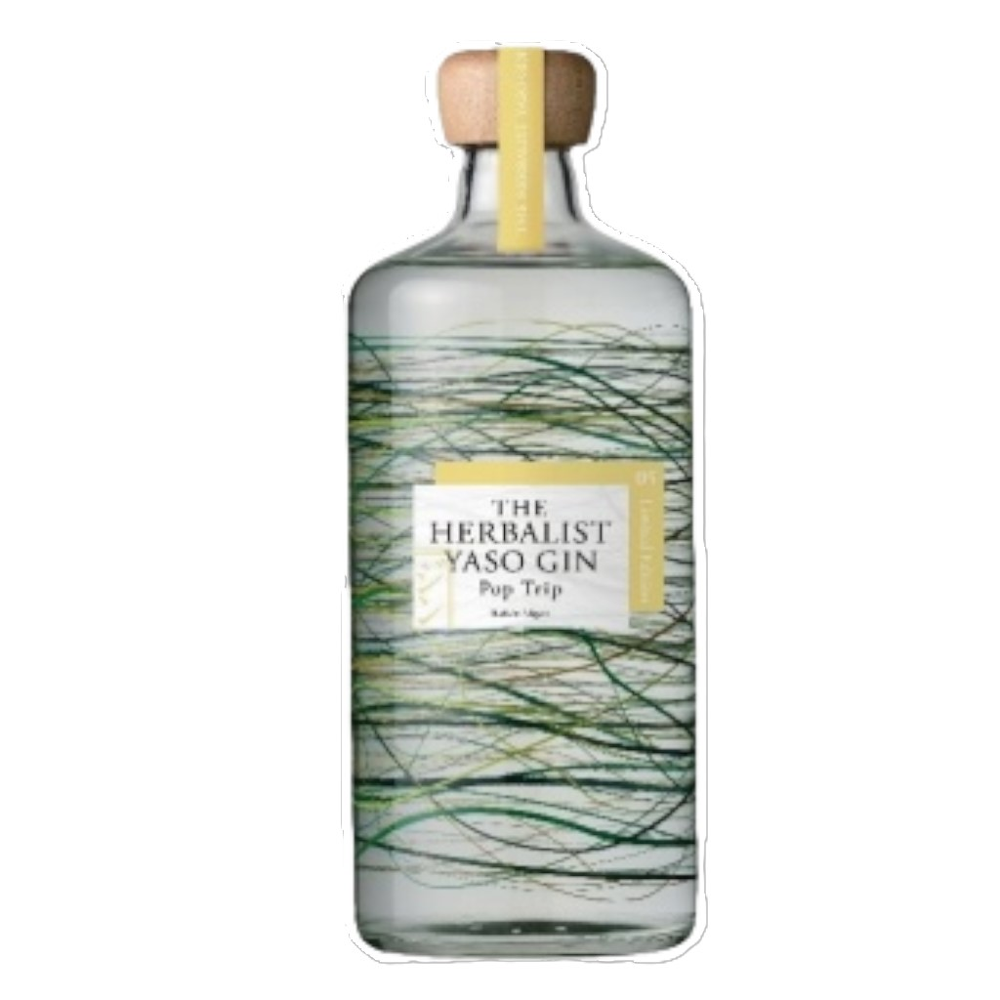

Menù Gin
- Adamus
- Alkkemist
- Amuerte Blue
- Amuerte White
- Benizakura 9184 #101
- Bimber Da Hong Pao
-  Bimber Kumquat
-
 Bobby's Schiedam
Bobby's Schiedam
- Citadelle
- Cruzloma
- DOA Orobic Dry Gin
- DOA Orobic Juniper Limited Edition
- Elephant Gin
- Elephant African Explorer
- Elephant Orange & Cocoa
- Elephant Strength
-  Engine
- Etsu
- Etsu Double Orange
-
 Etsu Double Yuzu
Etsu Double Yuzu
- Etsu Pacific Ocean
- Four Pillars Navy Strength
- Four Pillars Olive Leaf
- Four Pillars Spiced Negroni
- Fukagawa Tsuburo Lavender Limited Edition
- Hachiban Gunjo Strength
- Hapusa
- Hendrick's
- Hendrick's Amazonia
- Hendrick's Flora Adora
- Hendrick's Grand Cabaret
- Hendrick's Lunar
- Hendrick's Neptunia
- Hendrick's Orbium
- Honoho Umi
- Inferno
- James Gin Asian Parsnip
- James Gin London Drizzle
- Jinzu
- Ki No Bi Sei
- Monkey 47
- Nikka Coffey Gin
-
 Raasay
Raasay
- Saigon Baigur
- Sakari Shukugawa
- Sakurao Hamagou
- Sakurao Limited
- Skin Gin
- Song Cai
- Tanqueray n°10
- Taurus
- The Botanist
- Xibal
-  Yaso Limited Edition 05 "Pop Trip"